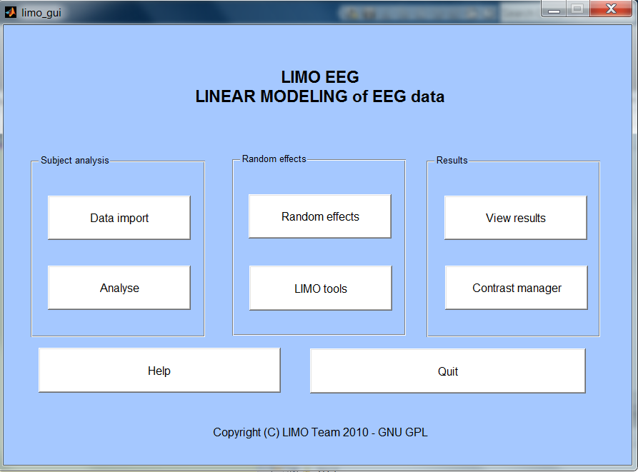

From
the general user interface you can:
1 – start the analysis of single subjects (subject analysis)
2 – start the analysis for one or several groups of subjects (random effects)
3 – perform annex operations like creating expected sets of electrode, creating optimized electrode vector, use the batch mode to process data of many subjects automatically, etc using LIMO tools
4 – view results and further analyse data (results)
Subject analysis
Data import allows you to read and import .set, i.e. data preprocessed in EEGLAB. You will also need some text files (.txt) or mat files (.mat) that you prepared to describe (in time) the occurrence of the different experimental conditions. Usually, you would have saved the 'triggers' of your EEG experiment with your .set, thus you could read and save this to be used in LIMO EEG.
Analyse – at the end of the data import a LIMO.mat file is created containing your design matrix – if you did not analyse the data then, you can load the design and run the analysis via this button.
Random Effects
EEG data have to be processed for each subjects first (subject analysis) and parameters estimates from this 1st analysis are used at this 2nd level.
Random effects calls an
interface for group analyses: robust means, t-tests, ANOVA etc ...
LIMO Tools calls a GUI to create various files useful for random effect analyses.
Results
In this section, results from both single subjects and group analysis can be visualized in various formats. Statistical results for the group can be explored using different correction for multiple testing techniques. It is also possible to further explore differences between conditions using the contrast manager (for pair-wise comparisons in a ANOVA for instance)
View Results loads the GUI to plot results under various formats
Contrast manager (also available in limo_results) calls a GUI to perform additional analyses for ANOVAs.
Once you click on Contrast Manager, you have to select a LIMO.mat file. The design matrix shows up on the left.
Input a new contrast in the 'New Contrast' box and press enter. Any new contrast that you type in will appear in the box below the design matrix to help you visualize which columns you contrast. In the Matlab command window messages are also returned indicating e.g. if your contrast is incorrect or not. Click on the 'diagonalize' box for F contrasts. Click Done to evaluate the contrast. If boostrapped data under H0 were computed, if will also ask if you want to run the contrast under H0.